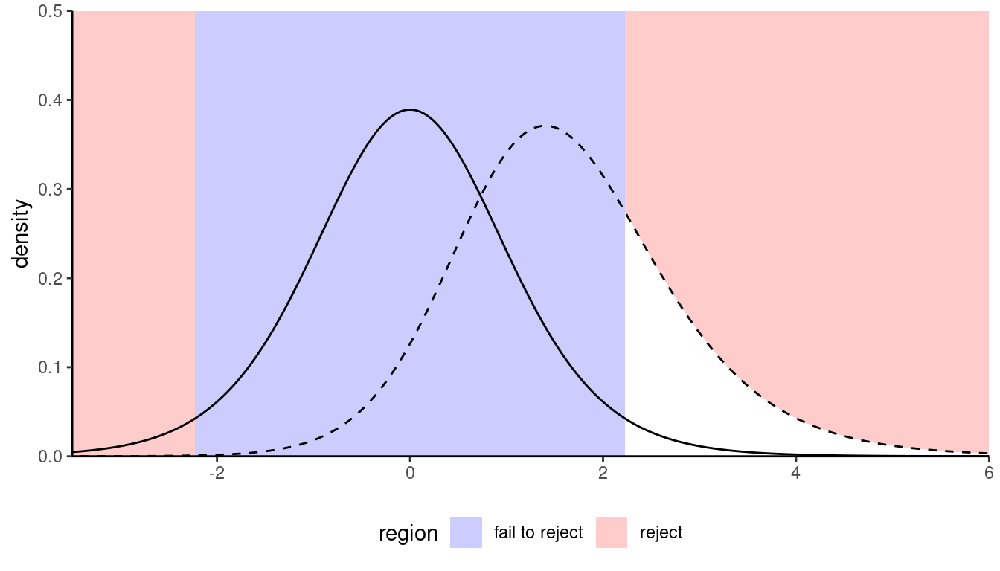
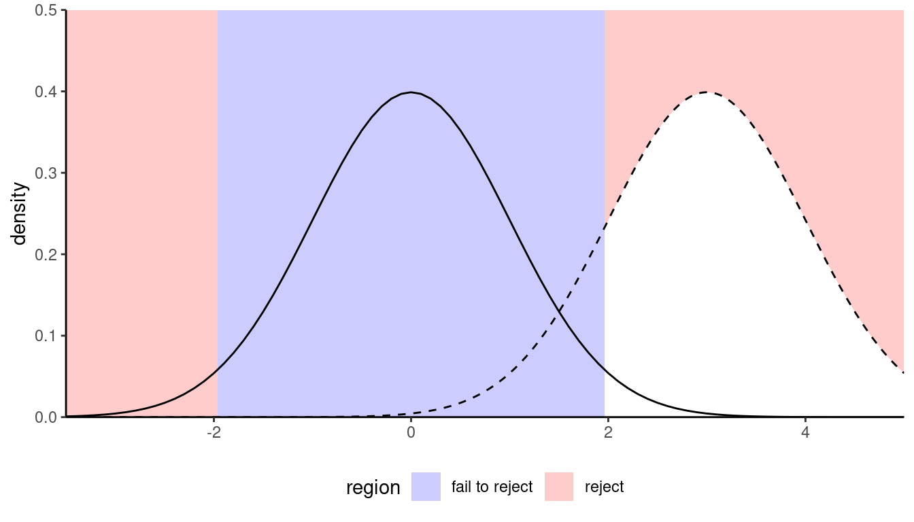
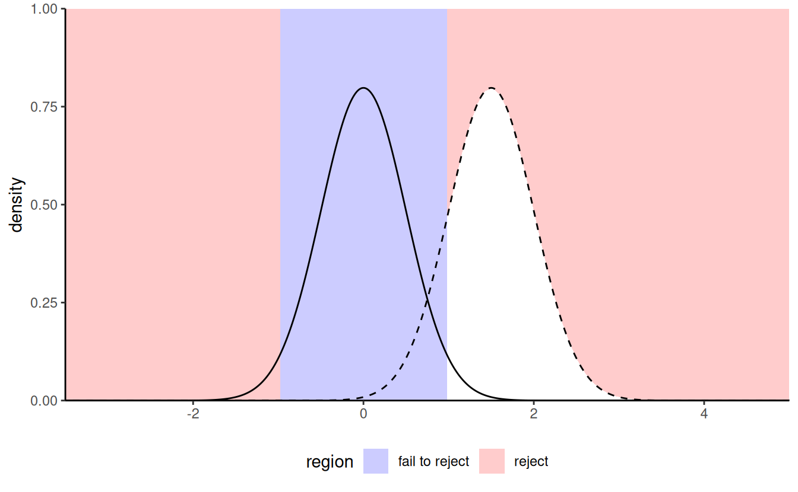
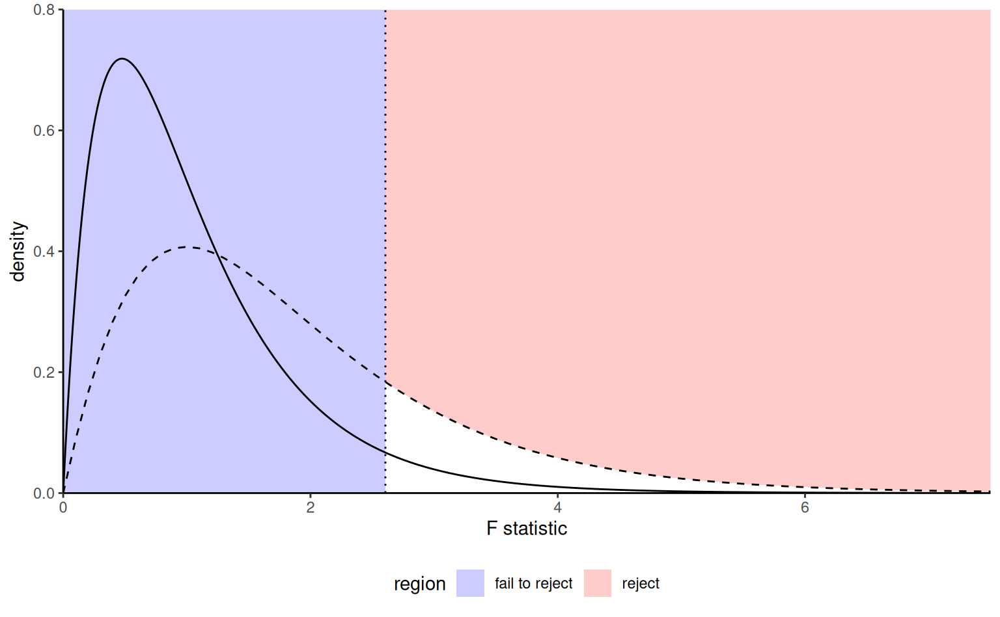

7 Effect sizes and power
In social studies, it is common to write a paper containing multiple studies on a similar topic. These may use different designs, with varying sample size. If the studies uses different questionnaires, or change the Likert scale, the results and the mean difference between groups are not directly comparable between experiments.
We may also wish replicate a study by using the same material and re-run an experiment. For the replication to be somewhat successful (or at least reliable), one needs to determine beforehand how many participants should be recruited in the study.
We could think for an example of comparing statistics or \(p\)-values, which are by construction standardized unitless measures, making them comparable across study. Test statistics show how outlying observed differences between experimental conditions relative to a null hypothesis, typically that of no effect (equal mean in each subgroup). However, statistics are usually a function of both the sample size (the number of observations in each experimental condition) and the effect size (how large the standardized differences between groups are), making them unsuitable for describing differences.
Figure 7.1 shows an example with the sampling distributions of the difference in mean under the null (curve centered at zero) and the true alternative (mean difference of two). The area in white under the curve represents the power, which is larger with larger sample size and coincides with smaller average \(p\)-values for the testing procedure.
One could argue that, on the surface, every null hypothesis is wrong and that, with a sufficiently large number of observation, all observed differences eventually become “statistically significant”. This has to do with the fact that we become more and more certain of the estimated means of each experimental sub-condition. Statistical significance of a testing procedure does not translate into practical relevance, which itself depends on the scientific question at hand. For example, consider the development of a new drug for commercialization by Health Canada: what is the minimum difference between two treatments that would be large enough to justify commercialization of the new drug? If the effect is small but it leads to many lives saved, would it still be relevant? Such decision involve a trade-off between efficacy of new treatment relative to the status quo, the cost of the drug, the magnitude of the improvement, etc.
Effect size are summaries to inform about the standardized magnitude of these differences; they are used to combine results of multiple experiments using meta-analysis, or to calculate sample size requirements to replicate an effect in power studies.
7.1 Effect sizes
There are two main classes of effect size: standardized mean differences and ratio (percentages) of explained variance. The latter are used in analysis of variance when there are multiple groups to compare.
Unfortunately, the literature on effect size is quite large. Researchers often fail to distinguish between estimand (unknown target) and the estimator that is being used, with frequent notational confusion arising due to conflicting standards and definitions. Terms are also overloaded: the same notation may be used to denote an effect size, but it will be calculated differently depending on whether the design is between-subject or within-subject (with repeated correlated measures per participant), or whether there are blocking factors.
7.1.1 Standardized mean differences
To gather intuition, we begin with the task of comparing the means of two groups using a two-sample \(t\)-test, with the null hypothesis of equality in means or \(\mathscr{H}_0: \mu_1 = \mu_2\). The test statistic is \[\begin{align*} T = \frac{\widehat{\mu}_2 - \widehat{\mu}_1}{\widehat{\sigma}} \left(\frac{1}{n_1}+\frac{1}{n_2}\right)^{-1/2} \end{align*}\] where \(\widehat{\sigma}\) is the pooled sample size estimator. The first term, \(\widehat{d}_s = (\widehat{\mu}_2 - \widehat{\mu}_1)/\widehat{\sigma}\), is termed Cohen’s \(d\) (Cohen 1988) and it measures the standardized difference between groups, a form of signal-to-noise ratio. As the sample size gets larger and larger, the sample mean and pooled sample variance become closer and closer to the true population values \(\mu_1\), \(\mu_2\) and \(\sigma\); at the same time, the statistic \(T\) becomes bigger as \(n\) becomes larger because of the second term.1
The difference \(d=(\mu_1-\mu_2)/\sigma\) has an obvious interpretation: a distance of \(a\) indicates that the means of the two groups are \(a\) standard deviation apart. Cohen’s \(d\) is sometimes loosely categorized in terms of weak (\(d = 0.2\)), medium (\(d=0.5\)) and large (\(d=0.8\)) effect size; these, much like arbitrary \(p\)-value cutoffs, are rules of thumbs. Alongside \(d\), there are many commonly reported metrics that are simple transformations of \(d\) describing the observed difference. This interactive applet by Kristoffer Magnusson (Magnusson 2021) shows the visual impact of changing the value of \(d\) along. There are different estimators of \(d\) depending on whether or not the pooled variance estimator is used. Cohen’s \(d\), is upward biased, meaning it gives values that are on average larger than the truth. Hedge’s \(g\) (Hedges 1981) offers a bias-correction and should always be preferred as an estimator.
For these different estimators, it is possible to obtain (asymmetric) confidence intervals or tolerance intervals.2
We consider a two-sample \(t\)-test for the study of Liu et al. (2022+) discussed in Example 2.5. The difference in average response index is 0.371, indicating that the responder have a higher score. The \(p\)-value is 0.041, showing a small effect.
If we consider the standardized difference \(d\), the group means are -0.289 standard deviations apart based on Hedge’s \(g\), with an associated 95% confidence interval of [-0.567, -0.011]: thus, the difference found is small (using Cohen (1988)’s convention) and there is a large uncertainty surrounding it.
There is a \(42\)% probability that an observation drawn at random from the responder condition will exceed an observation drawn at random of the initiator group (probability of superiority) and \(38.6\)% of the responder observations will exceed the median of the initiator (Cohen’s \(U_3\)).
data(LRMM22_S1, package = "hecedsm")
ttest <- t.test(
appreciation ~ role,
data = LRMM22_S1,
var.equal = TRUE)
effect <- effectsize::hedges_g(
appreciation ~ role,
data = LRMM22_S1,
pooled_sd = TRUE)7.1.2 Ratio and proportion of variance
Another class of effect sizes are obtained by considering either the ratio of the variance due to an effect (say differences in means relative to the overall mean) relative to the background level of noise as measured by the variance.
One common measure employed in software is Cohen’s f (Cohen 1988), which for a one-way ANOVA (equal variance \(\sigma^2\)) with more than two groups, \[ f^2 = \frac{1}{\sigma^2} \sum_{j=1}^k \frac{n_j}{n}(\mu_j - \mu)^2 = \frac{\sigma^2_{\text{effect}}}{\sigma^2}, \] a weighted sum of squared difference relative to the overall mean \(\mu\). \(\sigma^2_{\text{effect}}\) is a measure of the variability that is due to the difference in mean, so standardizing it by the measurement variance gives us a ratio of variance with values higher than one indicating that more variability is explainable, leading to higher effect sizes. If the means of every subgroup is the same, then \(f=0\). For \(k=2\) groups, Cohen’s \(f\) and Cohen’s \(d\) are related via \(f=d/2\).
Cohen’s \(f\) can be directly related to the behaviour of the \(F\) statistic under an alternative, as explained in Section 7.2.1. However, since the interpretation isn’t straightforward, we typically consider proportions of variance (rather than ratios of variance).
To build such an effect size, we break down the variability that is explained by our experimental manipulation (\(\sigma^2_\text{effect}\)), here denoted by effect, from the leftover unexplained part, or residual (\(\sigma^2_\text{resid}\)). In a one-way analysis of variance, \[\sigma^2_{\text{total}} = \sigma^2_{\text{resid}} + \sigma^2_{\text{effect}}\] and the percentage of variability explained by the \(\text{effect}\). \[\eta^2 = \frac{\text{explained variability}}{\text{total variability}}= \frac{\sigma^2_{\text{effect}}}{\sigma^2_{\text{resid}} + \sigma^2_{\text{effect}}} = \frac{\sigma^2_{\text{effect}}}{\sigma^2_{\text{total}}}.\] Simple arithmetic manipulations reveal that \(f^2 = \eta^2/(1-\eta^2)\), so we can relate any proportion of variance in terms of ratio and vice-versa.
Such an effect size depends on unknown population quantities (the true means of each subgroup, the overall mean and the variance). There are multiple alternative estimators to estimate \(\eta^2\), and researchers are often carefree when reporting as to which is used. To disambiguate, I will put \(\hat{\eta}^2\) to denote an estimator. To make an analogy, there are many different recipes (estimators) that can lead to a particular cake, but some may lead to a mixing that is on average too wet if they are not well calibrated.
The default estimator for \(\eta^2\) is the coefficient of determination of the linear regression, denoted \(\widehat{R}^2\) or \(\widehat{\eta}^2\). The latter can be reconstructed from the analysis of variance table using the formula \[ \widehat{R}{}^2 = \frac{F\nu_1}{F\nu_1 + \nu_2} \] where for the one-way ANOVA \(\nu_1 = K-1\) and \(\nu_2 = n-K\) are the degrees of freedom of a design with \(n\) observations and \(K\) experimental conditions.
Unfortunately, \(\widehat{R}{}^2\) is an upward biased estimator (too large on average), leading to optimistic measures. Another estimator of \(\eta^2\) that is recommended in Keppel and Wickens (2004) for power calculations is \(\widehat{\omega}^2\), which is \[\widehat{\omega}^2 = \frac{\nu_1 (F-1)}{\nu_1(F-1)+n}.\] Since the \(F\) statistic is approximately 1 on average, this measure removes the mode. Both \(\widehat{\omega}^2\) and \(\widehat{\epsilon}^2\) have been reported to be less biased and thus preferable as estimators of the true proportion of variance (Lakens 2013).
7.1.3 Partial effects and variance decomposition
In a multiway design with several factors, we may want to estimate the effect of separate factors or interactions. In such cases, we can break down the variability explained by manipulations per effect. The effect size for such models are build by comparing the variance explained by the effect \(\sigma^2_{\text{effect}}\).
For example, say we have a completely randomized balanced design with two factors \(A\), \(B\) and their interaction \(AB\). We can decompose the total variance as \[\sigma^2_{\text{total}} = \sigma^2_A + \sigma^2_B + \sigma^2_{AB} + \sigma^2_{\text{resid}}.\] When the design is balanced, these variance terms can be estimated using the mean squared error from the analysis of variance table output. If the design is unbalanced, the sum of square decomposition is not unique and we will get different estimates when using Type II and Type III sum of squares.
We can get formula similar to the one-sample case with now what are termed partial effect sizes, e.g., \[\widehat{\omega}^2_{\langle \text{effect} \rangle} = \frac{\text{df}_{\text{effect}}(F_{\text{effect}}-1)}{\text{df}_{\text{effect}}(F_{\text{effect}}-1) + n},\] where \(n\) is the overall sample size and \(F_\text{effect}\) and the corresponding degrees of freedom could be the statistic associated to the main effects \(A\) and \(B\), or the interaction term \(AB\). In R, the effectsize package reports these estimates with one-sided confidence intervals derived using the pivot method (Steiger 2004).3
Software will typically return estimates of effect size alongside with the designs, but there are small things to keep in mind. One is that the decomposition of the variance is not unique with unbalanced data. The second is that, when using repeated measures and mixed models, the same notation is used to denote different quantities.
Lastly, it is customary to report effect sizes that include the variability of blocking factors and random effects, leading to so-called generalized effect sizes. Include the variance of all blocking factors and interactions (only with the effect!) in the denominator.4
For example, if \(A\) is the experimental factor whose main effect is of interest, \(B\) is a blocking factor and \(C\) is another experimental factor, use \[\eta_{\langle A \rangle}^2 = \frac{\sigma^2_A}{\sigma^2_A + \sigma^2_B + \sigma^2_{AB} + \sigma^2_{\text{resid}}}.\] as generalized partial effect. In R, most effect sizes for variance proportion have a generalized argument to which the vector of names of blocking factor can be passed. The reason for including blocking factors and random effects is that they would not necessarily be available in a replication. The correct effect size measure to calculate and to report depends on the design, and there are numerous estimators that can be utilized. Since they are related to one another, it is oftentimes possible to compute them directly from the output or convert. The formula highlight the importance of reporting (with enough precision) exactly the values of the test statistic.
7.2 Power
There are typically two uses to hypothesis test: either we want to show it is not unreasonable to assume the null hypothesis (for example, assuming equal variance), or else we want to show beyond reasonable doubt that a difference or effect is significative: for example, one could wish to demonstrate that a new website design (alternative hypothesis) leads to a significant increase in sales relative to the status quo (null hypothesis).
Our ability make discoveries depends on the power of the test: the larger the power, the greater our ability to reject the null hypothesis \(\mathscr{H}_0\) when the latter is false.
The power of a test is the probability of correctly rejecting the null hypothesis \(\mathscr{H}_0\) when \(\mathscr{H}_0\) is false, i.e., \[\begin{align*} \mathsf{Pr}_a(\text{reject} \mathscr{H}_0) \end{align*}\] Whereas the null alternative corresponds to a single value (equality in mean), there are infinitely many alternatives… Depending on the alternative models, it is more or less easy to detect that the null hypothesis is false and reject in favour of an alternative. Power is thus a measure of our ability to detect real effects. Different test statistics can give broadly similar conclusions despite being based on different benchmark. Generally, however, there will be a tradeoff between the number of assumptions we make about our data or model (the fewer, the better) and the ability to draw conclusions when there is truly something going on when the null hypothesis is false.



We want to choose an experimental design and a test statistic that leads to high power, so that this power is as close as possible to one. Under various assumptions about the distribution of the original data, we can derive optimal tests that are most powerful, but some of the power comes from imposing more structure and these assumptions need not be satisfied in practice.
Minimally, the power of the test should be \(\alpha\) because we reject the null hypothesis \(\alpha\) fraction of the time even when \(\mathscr{H}_0\) is true. Power depends on many criteria, notably
- the effect size: the bigger the difference between the postulated value for \(\theta_0\) under \(\mathscr{H}_0\) and the observed behaviour, the easier it is to detect departures from \(\theta_0\). (Figure 7.4); it’s easier to spot an elephant in a room than a mouse.
- variability: the less noisy your data, the easier it is to assess that the observed differences are genuine, as Figure 7.3 shows;
- the sample size: the more observation, the higher our ability to detect significative differences because the amount of evidence increases as we gather more observations.5 In experimental designs, the power also depends on how many observations are allocated to each group.6
- the choice of test statistic: there is a plethora of possible statistics to choose from as a summary of the evidence against the null hypothesis. Choosing and designing statistics is usually best left out to statisticians, as there may be tradeoffs. For example, rank-based statistics discard information about the observed values of the response, focusing instead on their relative ranking. The resulting tests are typically less powerful, but they are also less sensible to model assumptions, model misspecification and outliers.
Changing the value of \(\alpha\) also has an impact on the power, since larger values of \(\alpha\) move the cutoff towards the bulk of the distribution. However, it entails a higher percentage of rejection also when the alternative is false. Since the value of \(\alpha\) is fixed beforehand to control the type I error (avoid judicial mistakes), it’s not a parameter we consider.
There is an intricate relation between effect size, power and sample size. Journals and grant agencies oftentimes require an estimate of the latter before funding a study, so one needs to ensure that the sample size is large enough to pick-up effects of scientific interest (good signal-to-noise), but also not overly large as to minimize time and money and make an efficient allocation of resources. This is Goldilock’s principle, but having more never hurts.
If we run a pilot study to estimate the background level of noise and the estimated effect, or if we wish to perform a replication study, we will come up with a similar question in both cases: how many participants are needed to reliably detect such a difference? Setting a minimum value for the power (at least 80%, but typically 90% or 95% when feasible) ensures that the study is more reliable and ensures a high chance of success of finding an effect of at least the size specified. A power of 80% ensures that, on average, 4 in 5 experiments in which we study a phenomenon with the specified non-null effect size should lead to rejecting the null hypothesis.
In order to better understand the interplay between power, effect size and sample size, we consider a theoretical example. The purpose of displaying the formula is to (hopefully) more transparently confirm some of our intuitions about what leads to higher power. There are many things that can influence the power:
- the experimental design: a blocking design or repeated measures tend to filter out some of the unwanted variability in the population, thus increasing power relative to a completely randomized design
- the background variability \(\sigma\): the noise level is oftentimes intrinsic to the measurement. It depends on the phenomenon under study, but instrumentation and the choice of scale, etc. can have an impact. Running experiments in a controlled environment helps reduce this, but researchers typically have limited control on the variability inherent to each observation.
- the sample size: as more data are gathered, information accumulates. The precision of measurements (e.g., differences in mean) is normally determined by the group with the smallest sample size, so (approximate) balancing increases power if the variance in each group is the same.
- the size of the effect: the bigger the effect, the easier it is to accurately detect (it’s easier to spot an elephant than a mouse hiding in a classroom).
- the level of the test, \(\alpha\): if we increase the rejection region, we technically increase power when we run an experiment under an alternative regime. However, the level is oftentimes prespecified to avoid type I errors. We may consider multiplicity correction within the power function, such as Bonferonni’s method, which is equivalent to reducing \(\alpha\).
7.2.1 Power for one-way ANOVA
To fix ideas, we consider the one-way analysis of variance model. In the usual setup, we consider \(K\) experimental conditions with \(n_k\) observations in group \(k\), whose population average we denote by \(\mu_k\). We can parametrize the model in terms of the overall sample average, \[\begin{align*} \mu = \frac{1}{n}\sum_{j=1}^K\sum_{i=1}^{n_j} \mu_j = \frac{1}{n}\sum_{j=1}^K n_j \mu_j, \end{align*}\] where \(n=n_1 + \cdots +n_K\) is the total sample size. The \(F\)-statistic of the one-way ANOVA is \[\begin{align*} F = \frac{\text{between sum of squares}/(K-1)}{\text{within sum of squares}/(n-K)} \end{align*}\] The null distribution is \(F(K-1, n-K)\). Our interest is in understanding how the F-statistic behaves under an alternative.
During the construction, we stressed out that the denominator is an estimator of \(\sigma^2\) under both the null and alternative. What happens to the numerator? We can write the population average for the between sum of square as \[ \mathsf{E}(\text{between sum of squares}) = \sigma^2\{(K-1) + \Delta\}. \] where \[ \Delta = \dfrac{\sum_{j=1}^K n_j(\mu_j - \mu)^2}{\sigma^2} = nf^2. \] and where \(f^2\) is the square of Cohen’s \(f\). Under the null hypothesis, all group means are equal and \(\mu_j=\mu\) for \(j=1, \ldots, K\) and \(\Delta=0\), but if some groups have different average the displacement will be non-zero. The greater \(\Delta\), the further the mode (peak of the distribution) is from unity and the greater the power.
Closer examination reveals that \(\Delta\) increases with \(n_j\) (sample size) and with the true squared mean difference \((\mu_j-\mu)^2\) increases effect size represented by the difference in mean, but decreases as the observation variance increases.
Under the alternative, the distribution of the \(F\) statistic is a noncentral Fisher distribution, denoted \(\mathsf{F}(\nu_1, \nu_2, \Delta)\) with degrees of freedom \(\nu_1\) and \(\nu_2\) and noncentrality parameter \(\Delta\).7 To calculate the power of a test, we need to single out a specific alternative hypothesis.

The plot in Figure 7.5 shows the null (full line) distribution and the true distribution (dashed line) for a particular alternative. The noncentral \(\mathsf{F}\) is shifted to the right and right skewed, so the mode (peak) is further away from 1.
Given a value of \(\Delta=nf^2\) and information about the effect of interest (degrees of freedom of the effect and the residuals), we can compute the tail probability as follows
- Compute the cutoff point: the value under \(\mathscr{H}_0\) that leads to rejection at level \(\alpha\)
- Compute probability below the alternative curve, from the cutoff onwards.
cutoff <- qf(p = 1-alpha, df1 = df1, df2 = df2)
pf(q = cutoff, df1 = df1, df2 = df2,
ncp = Delta, lower.tail = FALSE)In practice, a software will return these quantities and inform us about the power. Note that these results are trustworthy provided the model assumptions are met, otherwise they may be misleading.
The most difficult question when trying to estimate sample size for a study is determining which value to use for the effect size. One could opt for a value reported elsewhere for a similar scale to estimate the variability and provide educated guesses for the mean differences. Another option is to run a pilot study and use the resulting estimates to inform about sensible values, perhaps using confidence intervals to see the range of plausible effect sizes.
Reliance on estimated effect sizes reported in the literature is debatable: many such effects are inflated as a result of the file-drawer problem and, as such, can lead to unreasonably high expectations about power.
The WebPower package in R offers a comprehensive solution for conducting power studies, as is the free software G*Power.
7.2.2 Power in complex designs
In cases where an analytic derivations isn’t possible, we can resort to simulations to approximate the power. For a given alternative, we
- simulate repeatedly samples from the model from the hypothetical alternative world
- we compute the test statistic for each of these new samples
- we transform these to the associated p-values based on the postulated null hypothesis.
At the end, we calculate the proportion of tests that lead to a rejection of the null hypothesis at level \(\alpha\), namely the percentage of p-values smaller than \(\alpha\). We can vary the sample size and see how many observations we need per group to achieve the desired level of power.
Summary
- Effect sizes are used to provide a standardized measure of the strength of a result, independent of the design and the sample size.
- There are two classes: standardized differences and proportions of variance.
- Multiple estimators exists: report the latter along with the software used to compute confidence intervals.
- The adequate measure of variability to use for the effect size depends on the design: we normally include the variability of blocking factors and residual variance.
- Given a design, we can deduce either the sample size, the power or the effect size from the other two metrics. This allows us to compute sample size for a study or replication.
If we consider a balanced sample, \(n_1 = n_2 = n/2\) we can rewrite the statistic as \(T = \sqrt{n} \widehat{d}_s/2\) and the statement that \(T\) increases with \(n\) on average becomes more obvious.↩︎
By using the pivot method, e.g., Steiger (2004), and relating the effect size to the noncentrality parameter of the null distribution, whether \(\mathsf{St}\), \(\mathsf{F}\) or \(\chi^2\).↩︎
The confidence intervals are based on the \(\mathsf{F}\) distribution, by changing the non-centrality parameter and inverting the distribution function (pivot method). This yields asymmetric intervals.↩︎
Typically, there won’t be any interaction with blocking factors, but it there was for some reason, it should be included in the total.↩︎
Specifically, the standard error decreases with sample size \(n\) at a rate (typically) of \(n^{-1/2}\). The null distribution also becomes more concentrated as the sample size increase.↩︎
While the default is to assign an equal number to each subgroup, power may be maximized by specifying different sample size in each group if the variability of the measurement differ in these groups.↩︎
Note that the \(F(\nu_1, \nu_2)\) distribution is indistinguishable from \(\chi^2(\nu_1)\) for \(\nu_2\) large. A similar result holds for tests with \(\chi^2\) null distributions.↩︎